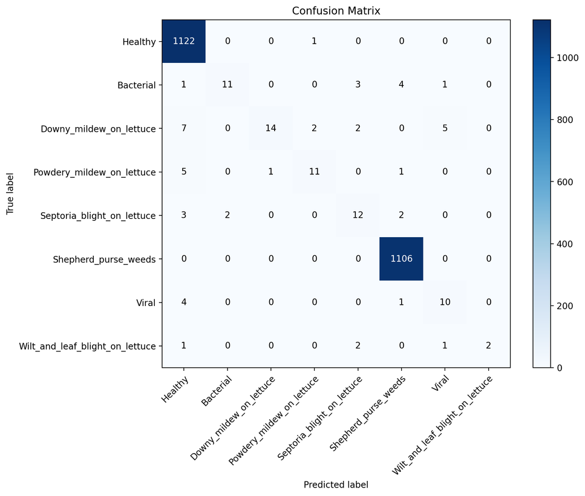

| Clase | Imágenes | Recall | |
|---|---|---|---|
| Shepherd_purse_weeds | 1.106 | 100 % | |
| Healthy | 1.123 | 99,9 % | |
| Viral | 15 | 66,7 % | |
| Septoria_blight_on_lettuce | 19 | 63,2 % | |
| Powdery_mildew_on_lettuce | 18 | 61,1 % | |
| Bacterial | 20 | 55,0 % | |
| Downy_mildew_on_lettuce | 30 | 46,7 % | |
| Wilt_and_leaf_blight_on_lettuce | 6 | 33,3 % |
Las dos clases grandes sostienen la exactitud; en las seis enfermedades, con 6 a 30 imágenes cada una, el modelo acierta entre un tercio y dos tercios.